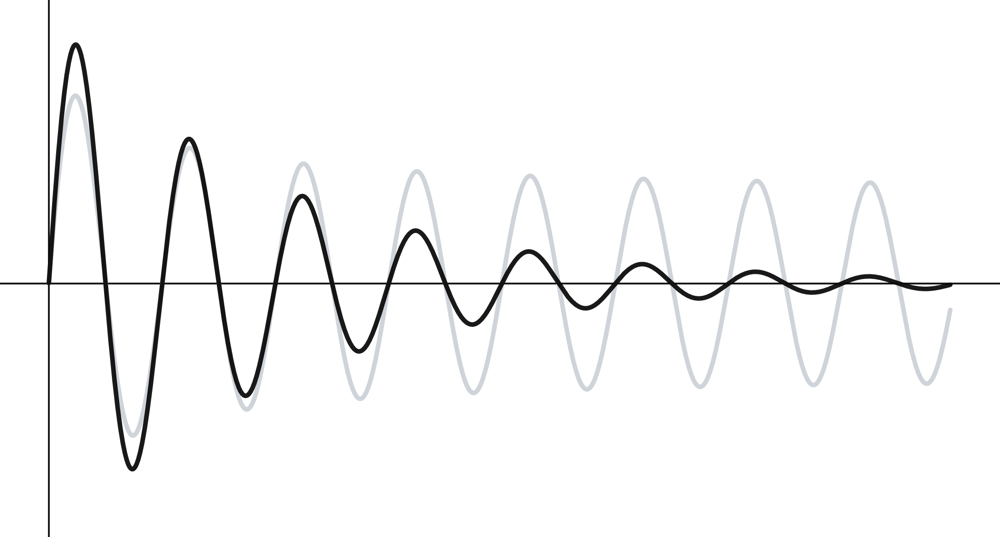
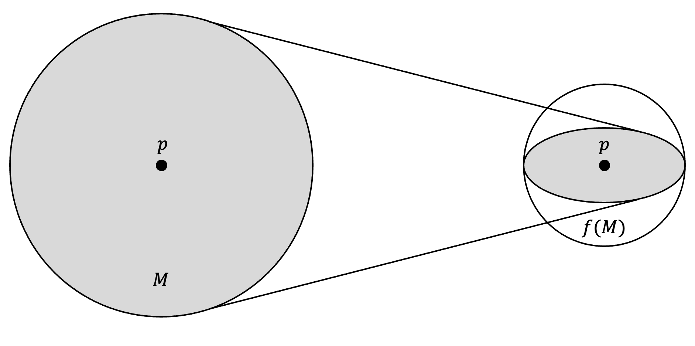

Policy and Value Iteration Proofs
Revised October 17, 2024
The Dynamic Programming for Solving MDPs note is optional but recommended background reading.
Policy and Value Iteration are guaranteed to converge to an optimal policy. This can be proven using Banach's fixed-point theorem, which asserts that in a complete metric space \((M, d)\), any contraction mapping \(f: M \rightarrow M\) has a unique fixed point. Before proving this theorem, we must define several key terms.
Complete Metric Space
A metric space \((M, d)\) is a set \(M\) paired with a metric \(d\). A metric is a function \(d : M \times M \rightarrow \mathbb{R}\) that satisfies the following properties:
\[ \begin{align} d(x,y) &\geq 0 && \text{non-negativity} \nonumber \\ d(x,y) &= 0 \iff x=y && \text{identity of indiscernibles} \nonumber \\ d(x,y) &= d(y,x) && \text{symmetry} \nonumber \\ d(x,y) &\leq d(x,z) + d(z,y) && \text{triangle inequality} \nonumber \end{align} \]
Informally, a metric can be understood as a measure of distance. Common examples include the Euclidean distance, \(d(x, y) = \sqrt{\sum_{i=1}^n (x_i - y_i)^2}\), and the absolute difference, \(d(x, y) = |x - y|\).
A metric space is complete if every Cauchy sequence in it converges to a limit that is also within the space. In a metric space \((M, d)\), a sequence is Cauchy if, for all \(\epsilon > 0\), there exists a positive integer \(N_\epsilon \in \mathbb{N}\) such that \(d(x_n, x_m) < \epsilon\) for all \(n, m > N_\epsilon\). That is, after some point in the sequence, all elements are within any arbitrarily small distance \(\epsilon\) of each other. Intuitively, this means that the elements of a Cauchy sequence eventually become arbitrarily close together.
|  |
| In a Cauchy sequence elements become arbitrarily close to each other as the sequence progresses. The black sequence is Cauchy while the gray sequence is not. |
Contraction
A contraction on a metric space \((M, d)\) is a function \(f: M \to M\) such that there exists a constant \(k \in [0,1)\) for which:
\[ \begin{equation}\label{eq:contraction} d \big(f(x), f(y) \big) \leq k d(x, y) \quad \forall \, x, y \in M \;. \end{equation} \]
In other words, a contraction maps any two distinct points \(x, y \in M\) to points that are closer together by at least a factor of \(k\), where \(k\) is strictly less than 1.
|  |
| Image from Applied Analysis, Chapter 3 (2005) John Hunter and Bruno Nachtergaele. In a metric space \((M, d)\), an open ball of radius \(r\) centered at a point \(p\), denoted \(B_r(p)\), is the set of all points in \(M\) whose distance from \(p\) (as measured by the metric \(d\)) is less than \(r\). Specifically, \(B_r(p) = \{x \in M \mid d(x, p) < r\}.\) For a contraction mapping \(f: M \to M\), there exists a constant \(k \in [0, 1)\) such that for every pair of points \(x, y \in M\), the distance between their images is strictly reduced by a factor of \(k\): \(d(f(x), f(y)) \leq k \cdot d(x, y)\). This property implies that points are mapped closer together. Moreover, for any \(p \in M\) and any radius \(r > 0\), the image of the ball \(B_r(p)\) under \(f\) will be contained in a smaller ball \(B_s(f(p))\) centered at \(f(p)\), where \(s = kr\). That is, \(f(B_r(p)) \subseteq B_{kr}(f(p))\). |
Fixed Point
A fixed point of a transformation \(f\) is a point \(p\) such that \(f(p) = p\). In the figure, \(p\) remains unchanged after \(f\) is applied to the space \(M\), indicating that \(p\) is a fixed point of \(f\).
Banach's Fixed-Point Theorem
With the necessary terms defined, we can now prove Banach's fixed-point theorem. The theorem asserts that in a complete metric space \((M, d)\), a contraction \(f: M \to M\) has a unique fixed point \(x^*\), where \(f(x^*) = x^*\). We will first prove the existence of a fixed point, and then demonstrate its uniqueness.
Proof That There is a Fixed Point
Given a contraction brings points closer together, it is intuitive that iterating \(f\) causes points to converge. Starting from an arbitrary point \(a\), repeated application of \(f\) yields the sequence:
\[ \begin{equation}\label{eq:iterative-contraction} a, f(a), f(f(a)), f(f(f(a))), \dots \;, \end{equation} \]
causing the distance between consecutive points to progressively decrease. We will formally prove this and establish an upper bound on the distance between consecutive points. For convenience, let \(x_0 = a\), \(x_1 = f(a)\), \(x_2 = f(f(a))\), and so on.
We begin by establishing an upper bound on the distance between two consecutive terms \(x_n\) and \(x_{n-1}\). Without loss of generality, assume the metric is the absolute difference, \(d(x, y) = \lvert x - y \rvert\):
\[ \begin{align} d(x_n, x_{n-1}) &= \lvert x_n - x_{n-1} \rvert \nonumber \\ &= \lvert f(x_{n-1}) - f(x_{n-2}) \rvert \label{eq:consecutive-term-def}\\ &\leq k \lvert x_{n-1} - x_{n-2} \rvert \label{eq:by-contraction-def} \\ &= k \lvert f(x_{n-2}) - f(x_{n-3}) \rvert \nonumber \\ &\leq k \big ( k \lvert x_{n-2} - x_{n-3} \rvert \big ) \nonumber \\ &= k^2 \lvert x_{n-2} - x_{n-3} \rvert \nonumber \\ &\vdots \nonumber \\ &\leq k^{n-1} \lvert x_1 - x_0 \rvert \label{eq:upper-bound} \end{align} \]
This proof follows a straightforward pattern: each term in the sequence is defined as the image of the preceding term under \(f\), e.g., \(x_1 = f(x_0)\), as exemplified in Equation \(\eqref{eq:consecutive-term-def}\). Applying the contraction property Equation \(\eqref{eq:contraction}\) yields Equation \(\eqref{eq:by-contraction-def}\), and iterating this process produces Equation \(\eqref{eq:upper-bound}\). Because \(k \in [0,1)\), the upper bound for \(d(x_n, x_{n-1})\) in Equation \(\eqref{eq:upper-bound}\) is small, and it decreases as \(n\) increases.
While Equation \(\eqref{eq:upper-bound}\) bounds consecutive terms, we can generalize this result to bound \(d(x_n, x_m)\) for any \(n > m\), even if \(n\) and \(m\) are not consecutive:
\[ \begin{align} d(x_n, x_m) &= \lvert x_n - x_m \rvert \\ &= \lvert (x_n - x_{n-1}) + (x_{n-1} - x_{n-2}) + \dots + (x_{m+1} - x_m) \rvert \label{eq:expanding-difference} \\ &\leq \lvert x_n - x_{n-1} \rvert + \lvert x_{n-1} - x_{n-2} \rvert + \dots + \lvert x_{m+1} - x_m \rvert \label{eq:using-tri-inequality} \\ &\leq (k^{n-1} + k^{n-2} + \dots + k^m) \lvert x_1 - x_0 \rvert \label{eq:generic-upper-bound} \\ &\leq (k^m + k^{m+1} + \dots) \lvert x_1 - x_0 \rvert \label{eq:infinite-sum} \\ &= \frac{k^m}{1-k} \lvert x_1 - x_0 \rvert \label{eq:sum-infinite-geometric-series} \end{align} \]
In Equation \(\eqref{eq:expanding-difference}\), we decompose \(\lvert x_n - x_m \rvert\) into the sum of consecutive differences. The triangle inequality gives Equation \(\eqref{eq:using-tri-inequality}\). Using the upper bound on each term from Equation \(\eqref{eq:upper-bound}\), we derive Equation \(\eqref{eq:generic-upper-bound}\), which leads to the geometric series in Equation \(\eqref{eq:infinite-sum}\). Extending the sum to infinity in Equation \(\eqref{eq:infinite-sum}\) provides a convenient upper bound, as the series converges due to \(k \in [0,1)\). The result in Equation \(\eqref{eq:sum-infinite-geometric-series}\) is obtained by summing the infinite geometric series from Equation \(\eqref{eq:infinite-sum}\).
Finding this bound is important because it proves that the sequence \(\lvert (x_n - x_{n-1}) + (x_{n-1} - x_{n-2}) + \dots + (x_{m+1} - x_m) \rvert\) in Equation \(\eqref{eq:expanding-difference}\) is Cauchy. Specifically, in Equation \(\eqref{eq:sum-infinite-geometric-series}\), both \((1 - k)\) and \(\lvert x_1 - x_0 \rvert\) are constants, so we can make \(d(x_n, x_m)\) arbitrarily small by making \(k^m\) small. Since \(k^m\) decreases exponentially as \(m\) increases, we can make \(d(x_n, x_m)\) arbitrarily small by choosing \(m, n > N\) for some sufficiently large \(N\). This satisfies the definition of a Cauchy sequence (see the “Complete metric space” section of this note). By the definition of a complete metric space, the sequence must therefore converge.
We now find the limit of the sequence. Let \(a = \lim_{n \to \infty} x_n\), where \(x_n = f(x_{n-1})\) as defined in Equation \(\eqref{eq:iterative-contraction}\):
\[ \begin{align} f(a) &= f\left(\lim_{n \to \infty} x_n\right) \label{eq:c-replaced} \\ &= \lim_{n \to \infty} f(x_n) \label{eq:continuous-function} \\ &= \lim_{n \to \infty} x_{n+1} \label{eq:by-consecutive-term-def} \\ &= a \nonumber \;, \end{align} \]
In Equation \(\eqref{eq:c-replaced}\), we replace \(a\) with \(\lim_{n \to \infty} x_n\), which is valid since the sequence \((x_n)\) is Cauchy and the space is complete, guaranteeing the existence of the limit. The step from Equation \(\eqref{eq:c-replaced}\) to Equation \(\eqref{eq:continuous-function}\) holds because \(f\) is continuous. We can see that \(f\) is continuous by recalling the definition of a contraction, \(\lvert f(x) - f(y) \rvert \leq k \lvert x - y \rvert\). As \(x \to y\), we have \(k \lvert x - y \rvert \to 0\), since \(k \in [0, 1)\) and \(\lvert x - y \rvert \geq 0\). Because \(\lvert f(x) - f(y) \rvert\) is bounded above by \(k \lvert x - y \rvert\), it also tends to 0 as \(x \to y\). Thus, \(f(x) \to f(y)\), satisfying the definition of continuity, where \(f(x) \to f(y)\) as \(x \to y\).. From Equation \(\eqref{eq:continuous-function}\) to Equation \(\eqref{eq:by-consecutive-term-def}\), we use \(x_n = f(x_{n-1})\), so \(f(x_n) = x_{n+1}\). Finally, since Equation \(\eqref{eq:by-consecutive-term-def}\) matches the definition of \(a\), we conclude \(f(a) = a\). This implies that \(a\) is a fixed point, as defined in the “Fixed Point” section of this note.
Proof that the Fixed Point is Unique
We have now proven that the contraction has a fixed point. To complete the proof of Banach’s fixed-point theorem, we must show that the fixed point is unique. We can do this by contradiction. Suppose there are two distinct fixed points \(a\) and \(a^\prime\), such that \(f(a) = a\) and \(f(a^\prime) = a^\prime\). Then:
\[ \begin{align} &\lvert a - a^\prime \rvert \geq 0 \quad && \text{by the non-negativity of the metric,} \nonumber \\ &\lvert a - a^\prime \rvert = \lvert f(a) - f(a^\prime) \rvert \leq k \lvert a - a^\prime \rvert && \text{by the contraction property and definition of a fixed point,} \label{eq:fp-inequality} \\ &k \in [0,1) && \text{because \(f\) is a contraction.} \nonumber \end{align} \]
Since \(k < 1\), this implies that \(\lvert a - a^\prime \rvert > 0\) leads to \(k \lvert a - a^\prime \rvert < \lvert a - a^\prime \rvert\), which contradicts the inequality \(\lvert a - a^\prime \rvert \leq k \lvert a - a^\prime \rvert\). Hence, the only possibility is that \(\lvert a - a^\prime \rvert = 0\), meaning \(a = a^\prime\). Therefore, the fixed point must be unique.
Application of Banach's Fixed-Point Theorem to MDPs
Recall that Banach's fixed-point theorem applies to complete metric spaces. In the context of MDPs, we work with a specific type of metric space called a normed vector space, \(B(\mathcal{S})\), which is the space of bounded real-valued functions defined on the state space \(\mathcal{S}\) (i.e., \(\mathcal{S}\) is the set of all possible inputs over which the functions are defined):
\[ \begin{equation*} B(\mathcal{S}) = \{ V: \mathcal{S} \to \mathbb{R} : \lVert V \rVert_\infty < +\infty \} \;, \end{equation*} \]
where \(V\) is a bounded function, meaning there exists a real number \(M\) such that \(\lvert V(s) \rvert \leq M\) for all \(s \in \mathcal{S}\), and \(\lVert \cdot \rVert_\infty\) is the infinity norm.
Infinity norm
Norms, like metrics, provide a way to measure distances or lengths. More formally, a norm on a vector space \(B(\mathcal{S})\), which is the space of bounded real-valued functions defined on the state space \(\mathcal{S}\), is a function \(p: B(\mathcal{S}) \to \mathbb{R}\) that satisfies the following properties:
\[ \begin{align*} p(V) &= 0 \iff V(s) = 0 \text{ for all } s \in \mathcal{S} && \text{(positive definiteness)} \\ p(\gamma V) &= \lvert \gamma \rvert p(V) \quad \forall \gamma \in \mathbb{R}, V \in B(\mathcal{S}) && \text{(absolute homogeneity)} \\ p(V + U) &\leq p(V) + p(U) \quad \forall V, U \in B(\mathcal{S}) && \text{(triangle inequality)} \end{align*} \]
The infinity norm for a bounded function \(V\) is defined as \(\lVert V \rVert_\infty = \sup_{s \in \mathcal{S}} \lvert V(s) \rvert\), which gives the maximum absolute value of the function across all states. In the context of MDPs, this norm provides a measure of the maximum possible value that the state-value function \(V\) can take across the state space.
Bellman Operator
Having defined a normed vector space, we now introduce an appropriate contraction. Since we are using Banach's fixed-point theorem to prove the convergence of policy and Value Iteration to the optimal policy, it is natural to define our contraction in terms of a policy's value function.
Using the matrix form of the Bellman equation, we define a contraction, called the Bellman operator, \(\mathcal{T}_\pi: B(\mathcal{S}) \to B(\mathcal{S})\), which maps one state-value function \(\mathbf{v}\) to another:
\[ \begin{equation} \mathcal{T}_\pi(\mathbf{v}) = \mathbf{r}_\pi + \gamma \mathbf{P}_\pi \mathbf{v} \label{eq:bellman-operator} \;. \end{equation} \]
To illustrate this operator, consider a simple example where \(\mathcal{S} = \{ s_1, s_2, s_3 \}\). Applying \(\mathcal{T}_\pi\) to the value function:
\[ \begin{equation*} \mathcal{T}_\pi \Bigg ( \begin{bmatrix} v(s_1) \\ v(s_2) \\ v(s_3) \end{bmatrix} \Bigg ) = \begin{bmatrix} r_\pi(s_1) \\ r_\pi(s_2) \\ r_\pi(s_3) \end{bmatrix} + \gamma \begin{bmatrix} P_\pi(s_1, s_1) & P_\pi(s_1, s_2) & P_\pi(s_1, s_3) \\ P_\pi(s_2, s_1) & P_\pi(s_2, s_2) & P_\pi(s_2, s_3) \\ P_\pi(s_3, s_1) & P_\pi(s_3, s_2) & P_\pi(s_3, s_3) \end{bmatrix} \begin{bmatrix} v(s_1) \\ v(s_2) \\ v(s_3) \end{bmatrix} \end{equation*} \]
For \(s_1\), the Bellman operator can be expanded as:
\[ \begin{align*} [\mathcal{T}_\pi\mathbf{v}](s_1) &= r_{\pi}(s_1) + \gamma \left( P_\pi(s_1, s_1) \cdot v(s_1) + P_\pi(s_1, s_2) \cdot v(s_2) + P_\pi(s_1, s_3) \cdot v(s_3) \right) \\ &= \sum_{a \in \mathcal{A}} \pi(a \mid s_1) R(s_1, a) + \gamma \left( \sum_{a \in \mathcal{A}} \pi(a \mid s_1) P(s_1, a, s_1) \cdot v(s_1) + \sum_{a \in \mathcal{A}} \pi(a \mid s_1) P(s_1, a, s_2) \cdot v(s_2) + \sum_{a \in \mathcal{A}} \pi(a \mid s_1) P(s_1, a, s_3) \cdot v(s_3) \right) \\ &= \sum_{a \in \mathcal{A}} \pi(a \mid s_1) \left( R(s_1, a) + \gamma \left( P(s_1, a, s_1) \cdot v(s_1) + P(s_1, a, s_2) \cdot v(s_2) + P(s_1, a, s_3) \cdot v(s_3) \right) \right) \\ &= \sum_{a \in \mathcal{A}} \pi(a \mid s_1) \left( R(s_1, a) + \gamma \sum_{s’ \in \mathcal{S}} P(s_1, a, s’) \cdot v(s’) \right) \; . \end{align*} \]
Using a deterministic policy \(\pi(s)\), we can prove that the Bellman operator is a contraction in the infinity norm \(\lVert \cdot \rVert_\infty\):
\[ \begin{align} [\mathcal{T}_\pi \mathbf{u}](s) &= R(s, \pi(s)) + \gamma \sum_{s’ \in \mathcal{S}} P(s, \pi(s), s’) \mathbf{u}(s’) \label{eq:u-value-function} \\ [\mathcal{T}_\pi \mathbf{v}](s) &= R(s, \pi(s)) + \gamma \sum_{s’ \in \mathcal{S}} P(s, \pi(s), s’) \mathbf{v}(s’) \label{eq:v-value-function} \\ \lVert \mathcal{T}_\pi(\mathbf{u}) - \mathcal{T}_\pi(\mathbf{v}) \rVert_\infty &= \max_{s \in \mathcal{S}} \Bigg \lvert R(s, \pi(s)) + \gamma \sum_{s’ \in \mathcal{S}} P(s, \pi(s), s’) \mathbf{u}(s’) - \left( R(s, \pi(s)) + \gamma \sum_{s’ \in \mathcal{S}} P(s, \pi(s), s’) \mathbf{v}(s’) \right) \Bigg \rvert \label{eq:value-function-difference} \\ &= \gamma \max_{s \in \mathcal{S}} \Bigg \lvert \sum_{s’ \in \mathcal{S}} P(s, \pi(s), s’) \big( \mathbf{u}(s’) - \mathbf{v}(s’) \big) \Bigg \rvert \label{eq:simplify-difference} \\ &\leq \gamma \max_{s \in \mathcal{S}} \sum_{s’ \in \mathcal{S}} P(s, \pi(s), s’) \lvert \mathbf{u}(s’) - \mathbf{v}(s’) \rvert \label{eq:value-func-triangle-inequality} \\ &\leq \gamma \max_{s \in \mathcal{S}} \sum_{s’ \in \mathcal{S}} P(s, \pi(s), s’) \lVert \mathbf{u} - \mathbf{v} \rVert_\infty \label{eq:replace-with-norm} \\ &= \gamma \lVert \mathbf{u} - \mathbf{v} \rVert_\infty \;, \label{eq:bellman-is-contraction} \end{align} \]
Each step in this derivation can be justified as follows. The first two equations, Equation \(\eqref{eq:u-value-function}\) and Equation \(\eqref{eq:v-value-function}\), come directly from the definition of the Bellman operator Equation \(\eqref{eq:bellman-operator}\) (note that since we are using a deterministic policy, there is no need to sum over all actions \(a \in \mathcal{A}\), simplifying the expressions). In Equation \(\eqref{eq:value-function-difference}\), the infinity norm \(\lVert \cdot \rVert_\infty\) is applied, which captures the maximum absolute difference between the value functions across all states. Simplification in Equation \(\eqref{eq:simplify-difference}\) removes the reward term \(R(s, \pi(s))\), as it cancels out, leaving only the differences in future state values. The triangle inequality is then applied in Equation \(\eqref{eq:value-func-triangle-inequality}\), which ensures that \(\lvert \sum_n a_n \rvert \leq \sum_n \lvert a_n \rvert\). Next, Equation \(\eqref{eq:replace-with-norm}\) follows from the definition of the infinity norm, which guarantees \(\lvert \mathbf{u}(s’) - \mathbf{v}(s’) \rvert \leq \lVert \mathbf{u} - \mathbf{v} \rVert_\infty\) for all \(s’ \in \mathcal{S}\). Finally, Equation \(\eqref{eq:bellman-is-contraction}\) holds because \(\sum_{s’ \in \mathcal{S}} P(s, \pi(s), s’) = 1\) (since these are transition probabilities). Thus, we conclude that \(\lVert \mathcal{T}_\pi(\mathbf{u}) - \mathcal{T}_\pi(\mathbf{v}) \rVert_\infty \leq \gamma \lVert \mathbf{u} - \mathbf{v} \rVert_\infty\), satisfying the definition of a contraction in Equation \(\eqref{eq:contraction}\).
To clarify the connection between the terms in Equation \(\eqref{eq:u-value-function}\) through Equation \(\eqref{eq:bellman-is-contraction}\) and the general terms used when describing a contraction in the “Proving Banach's Fixed-Point Theorem” section of this note, we can map them as follows:
\[ \begin{align*} d &\longrightarrow \lVert \cdot \rVert_\infty &&\text{(the infinity norm as the metric)} \\ f &\longrightarrow \mathcal{T}_\pi &&\text{(the Bellman operator as the contraction)} \\ x &\longrightarrow \mathbf{v} &&\text{(the first value function)} \\ y &\longrightarrow \mathbf{u} &&\text{(the second value function)} \\ k &\longrightarrow \gamma &&\text{(the discount factor as the contraction constant)} \\ \end{align*} \]
Intuition for the Bellman Operator Fixed Point
Having proven that the Bellman operator is a contraction, Banach's fixed-point theorem guarantees the existence of a unique fixed point. It is important to develop an intuition for what a fixed point represents in this context. The sequence generated by the Bellman operator proceeds as follows:
\[ \begin{align*} \mathbf{v}_0, \mathcal{T}_\pi(\mathbf{v}_0), \mathcal{T}_\pi(\mathcal{T}_\pi(\mathbf{v}_0)), \mathcal{T}_\pi(\mathcal{T}_\pi(\mathcal{T}_\pi(\mathbf{v}_0))), \dots && \text{cf. } \eqref{eq:iterative-contraction} \end{align*} \]
That is, the Bellman operator generates a Cauchy sequence:
\[ \begin{align*} \mathbf{v}_{k+1} = \mathcal{T}_\pi(\mathbf{v}_k) = \mathcal{T}_\pi^{k+1}(\mathbf{v}_0) \quad \text{for } k \geq 0 \;, \end{align*} \]
where \(\mathbf{v}_0\) is an arbitrary initial value function and \(\mathcal{T}_\pi^{k+1}\) denotes the operator applied \(k+1\) times, e.g., \(\mathcal{T}_\pi^2(\mathbf{v}) = \mathcal{T}_\pi(\mathcal{T}_\pi(\mathbf{v}))\).
Since this sequence is Cauchy and we are in a normed vector space, for any initial value function \(\mathbf{v}_0\) the sequence converges to a unique fixed point \(\mathbf{v}\), which satisfies \(\mathbf{v} = \mathcal{T}_\pi(\mathbf{v})\). The fixed point is the value function that solves the Bellman equation, representing the value of each state under the policy \(\pi\) after convergence (highlighted in red):
\[ \begin{equation*} [\mathcal{T}_\pi (\mathbf{v})](s) = \sum_{a \in \mathcal{A}} \pi(a \mid s) \left( R(s, a) + \gamma \sum_{s’ \in \mathcal{S}} P(s, a, s’) \color{red}{\mathbf{v}} (s’) \right) \;. \end{equation*} \]
If we start with an arbitrary function \(\mathbf{v}_0\) that is not the true value function \(\mathbf{v}\), we get:
\[ \begin{equation*} \sum_{a \in \mathcal{A}} \pi(a \mid s) \left( R(s, a) + \gamma \sum_{s’ \in \mathcal{S}} P(s, a, s’) \color{red}{\mathbf{v}_0}(s’) \right), \end{equation*} \]
which is not a solution, as illustrated by the following example.
 |
This is a two-state system where the agent transitions from state \(s_1\) to \(s_2\) with probability \(0.2\) and to \(s_1\) with probability \(0.8\). These transitions yield rewards of \(-10\) and \(15\), respectively. From state \(s_2\), the agent transitions to \(s_1\) with probability \(0.6\) and remains in \(s_2\) with probability \(0.4\), with corresponding rewards of \(15\) and \(-10\).
Plugging \(\mathbf{v}_0 \neq \mathbf{v}_\pi\) into the Bellman operator Equation \(\eqref{eq:bellman-operator}\), we observe that \(V_0\) is not a fixed point. For instance, if \(\mathbf{v}_0 = [20, 10]^\top\) and \(\gamma = 0.9\):
\[ \begin{equation} \nonumber \begin{bmatrix} 10 \\ 5 \end{bmatrix} + 0.9 \begin{bmatrix} 0.8 & 0.2 \\ 0.6 & 0.4 \end{bmatrix} \begin{bmatrix} \color{red}{20} \\ \color{red}{10} \end{bmatrix} = \begin{bmatrix} \color{red}{26.2} \\ \color{red}{19.4} \end{bmatrix} \end{equation} \]
Because \([20,10]^\top \neq [26.2,19.4]^\top\), \(\mathbf{v}_0\) is, by definition, not a fixed point.
In fact, the true value function \(\mathbf{v}_\pi\) is the only fixed point. We can show that \(\mathbf{v}_\pi\) is a fixed point as follows:
\[ \begin{align*} [\mathcal{T}_\pi (\mathbf{v}_\pi)](s) &= \sum_{a \in \mathcal{A}} \pi(a \mid s) \left( R(s, a) + \gamma \sum_{s’ \in \mathcal{S}} P(s, a, s’) \mathbf{v}_\pi(s’) \right) \\ &= \sum_{a \in \mathcal{A}} \pi(a \mid s) R(s, a) + \gamma \sum_{a \in \mathcal{A}} \pi(a \mid s) \sum_{s’ \in \mathcal{S}} P(s, a, s’) \mathbf{v}_\pi(s’) \\ &= \mathbf{v}_\pi(s) \;. \end{align*} \]
Continuing with the example, as shown in the value function and policies note, the true value function for this MDP is \(\mathbf{v}_\pi = [89.02, 82.93]^\top\). Substituting this into the Bellman operator Equation \(\eqref{eq:bellman-operator}\), we get:
\[ \begin{equation*} \begin{bmatrix} 10 \\ 5 \end{bmatrix} + 0.9 \begin{bmatrix} 0.8 & 0.2 \\ 0.6 & 0.4 \end{bmatrix} \begin{bmatrix} \color{red}{89.02} \\ \color{red}{82.93} \end{bmatrix} = \begin{bmatrix} \color{red}{89.02} \\ \color{red}{82.93} \end{bmatrix} \;. \end{equation*} \]
Since \([89.02, 82.93]^\top = [89.02, 82.93]^\top\), we conclude that \(\mathbf{v}_\pi\) is indeed a fixed point. By Banach's fixed-point theorem, this fixed point is unique.
Bellman Optimality Operator
Analogous to the Bellman operator defined in Equation \(\eqref{eq:bellman-operator}\), we define the Bellman optimality operator \(\mathcal{T}_* : B(\mathcal{S}) \to B(\mathcal{S})\) as follows:
\[ \begin{equation}\label{eq:bellman-optimality-operator} [\mathcal{T}_*(\mathbf{v})](s) = \max_{a} \left[ R(s, a) + \gamma \sum_{s’ \in \mathcal{S}} P(s, a, s’) \mathbf{v}(s’) \right] \;. \end{equation} \]
Like the Bellman operator, the Bellman optimality operator is a contraction. Specifically, we have:
\[ \begin{align} [\mathcal{T}_*(\mathbf{u})](s) &= \max_{a \in \mathcal{A}} \left( R(s, a) + \gamma \sum_{s’ \in \mathcal{S}} P(s, a, s’) \mathbf{u}(s’) \right) \nonumber \\ [\mathcal{T}_*(\mathbf{v})](s) &= \max_{a \in \mathcal{A}} \left( R(s, a) + \gamma \sum_{s’ \in \mathcal{S}} P(s, a, s’) \mathbf{v}(s’) \right) \nonumber \\ \lVert \mathcal{T}_*(\mathbf{u}) - \mathcal{T}_*(\mathbf{v}) \rVert_\infty &= \max_{s \in \mathcal{S}} \left| \max_{a \in \mathcal{A}} \left( R(s, a) + \gamma \sum_{s’ \in \mathcal{S}} P(s, a, s’) \mathbf{u}(s’) \right) - \max_{a \in \mathcal{A}} \left( R(s, a) + \gamma \sum_{s’ \in \mathcal{S}} P(s, a, s’) \mathbf{v}(s’) \right) \right| \label{eq:optimality-func-before-factor} \\ &\leq \gamma \max_{s \in \mathcal{S}, a \in \mathcal{A}} \sum_{s’ \in \mathcal{S}} P(s, a, s’) \lvert \mathbf{u}(s’) - \mathbf{v}(s’) \rvert \label{eq:optimality-func-factor-max} \\ &\leq \gamma \max_{s \in \mathcal{S}, a \in \mathcal{A}} \sum_{s’ \in \mathcal{S}} P(s, a, s’) \lVert \mathbf{u} - \mathbf{v} \rVert_\infty \nonumber \\ &= \gamma \lVert \mathbf{u} - \mathbf{v} \rVert_\infty \;. \nonumber \end{align} \]
Except for Equation \(\eqref{eq:optimality-func-factor-max}\), the logic proceeds as it did for proving that the Bellman operator is a contraction (Equation \(\eqref{eq:u-value-function}\) – Equation \(\eqref{eq:bellman-is-contraction}\)). In Equation \(\eqref{eq:optimality-func-factor-max}\), we cannot directly factor out \(\max_{a \in \mathcal{A}}\) because the value functions \(\mathbf{u}\) and \(\mathbf{v}\) differ, meaning the maximizing action \(a^*\) may be different for \(\mathbf{u}\) and \(\mathbf{v}\). However, since we are using the infinity norm, we are considering the worst-case (i.e., maximum) possible difference between the value functions. This is why the equality in Equation \(\eqref{eq:optimality-func-before-factor}\) becomes an inequality in Equation \(\eqref{eq:optimality-func-factor-max}\). Thus, the Bellman optimality operator is a contraction.
Bounding the difference of maximums by the maximum difference
We can justify Equation \(\eqref{eq:optimality-func-factor-max}\) by showing that the maximum absolute difference of two functions is greater than or equal to the absolute difference of their respective maxima:
\[ \begin{equation*} \lvert \max_a f(a) - \max_a g(a) \rvert \leq \max_a \lvert f(a) - g(a) \rvert \;. \end{equation*} \]
Assuming, without loss of generality, that \(\max_a f(a) \geq \max_a g(a)\) and letting \(a^* = \text{argmax}_a f(a)\), we can prove this inequality as follows:
\[ \begin{align*} \lvert \max_a f(a) - \max_a g(a) \rvert &= \max_a f(a) - \max_a g(a) \\ &= f(a^*) - \max_a g(a) \\ &\leq f(a^*) - g(a^*) \\ &\leq \max_a \lvert f(a) - g(a) \rvert \;. \end{align*} \]
The Bellman optimality operator \(T_*\), like the Bellman operator \(T_\pi\), is a contraction. By Banach's fixed-point theorem, it therefore has a unique fixed point, denoted \(v_{fp}\). By definition of a fixed point, this function satisfies \(T_*(v_{fp}) = v_{fp}\). Expanding this expression for any state \(s\) gives:
\[ \begin{equation*} v_{fp}(s) = [\mathcal{T}_*(v_{fp})](s) = \max_{a} \left( R(s,a) + \gamma \sum_{s’ \in \mathcal{S}} P(s, a, s’) v_{fp}(s’) \right) \;. \end{equation*} \]
This is exactly the Bellman optimality equation (Equation \(\eqref{eq:bellman-optimality-operator}\)). The optimal value function \(v_*\) is defined as the unique solution to this equation, so the fixed point of the Bellman optimality operator is the optimal value function: \(v_{fp} = v_*\).
Proving Value Iteration Converges to the Optimal Policy
Value Iteration is effectively the repeated application of the Bellman optimality operator, \(\mathbf{v}_{k+1} = \mathcal{T}_*(\mathbf{v}_k)\). Using our previous results, we can directly show that Value Iteration converges to \(\mathbf{v}_*\). Specifically, we have already proven that the Bellman optimality operator is a contraction with a fixed point \(\mathbf{v}_*\). Therefore, by Banach’s fixed-point theorem, \(\mathcal{T}_*\) applied repeatedly will converge to the optimal value function \(\mathbf{v}_*\) for any arbitrary initial value function \(\mathbf{v}_0\):
\[ \begin{equation*} \lim_{k \to \infty} \mathbf{v}_k = \mathbf{v}_* \;, \end{equation*} \]
where the sequence is defined by the Value Iteration update rule \(v_{k+1} = \mathcal{T}_*(v_k)\).
Once \(\mathbf{v}_*\) is obtained, the optimal policy can be derived using a one-step lookahead to select the action that maximizes the state-action value: \(\text{argmax}_a Q_*(s, a)\).
Proving Policy Iteration Converges to the Optimal Policy
We now prove that Policy Iteration converges to the optimal policy using the policy improvement theorem, which guarantees that the greedy policy \(\pi'\) is always at least as good as the original policy \(\pi\).
Let \(\pi'\) be the greedy policy with respect to the value function \(V_\pi\), defined for all \(s \in \mathcal{S}\) as:
\[ \begin{align*} \pi’(s) &= \arg \max_a Q_\pi(s, a) \\ &= \arg \max_a \left( R(s, a) + \gamma \sum_{s’ \in \mathcal{S}} P(s, a, s’) V_\pi(s’) \right) \;. \end{align*} \]
By construction, this greedy policy satisfies the condition:
\[ \begin{equation}\label{eq:greedy} Q_\pi(s, \pi’(s)) \ge V_\pi(s) \;, \end{equation} \]
since \(V_\pi(s)\) is the expected action-value under policy \(\pi\), and the maximum of a set of values is always greater than or equal to its expectation.
We can now show that \(V_{\pi’}(s) \ge V_\pi(s)\) by expanding the Q-function and repeatedly applying this inequality:
\[ \begin{align*} V_\pi(s) &\leq Q_\pi(s, \pi’(s)) \\ &= \mathbb{E}[r_{t+1} + \gamma V_\pi(s_{t+1}) \mid s_t = s, a_t = \pi’(s)] \\ &= \mathbb{E}_{\pi’}[r_{t+1} + \gamma V_\pi(s_{t+1}) \mid s_t = s] \\ &\leq \mathbb{E}_{\pi’}[r_{t+1} + \gamma Q_\pi(s_{t+1}, \pi’(s_{t+1})) \mid s_t = s] && \text{by Equation \eqref{eq:greedy}} \\ &= \mathbb{E}_{\pi’}[r_{t+1} + \gamma \mathbb{E}[r_{t+2} + \gamma V_\pi(s_{t+2}) \mid s_{t+1}, a_{t+1} = \pi’(s_{t+1})] \mid s_t = s] \\ &= \mathbb{E}_{\pi’}[r_{t+1} + \gamma r_{t+2} + \gamma^2 V_\pi(s_{t+2}) \mid s_t = s] \\ &\leq \mathbb{E}_{\pi’}[r_{t+1} + \gamma r_{t+2} + \gamma^2 r_{t+3} + \gamma^3 V_\pi(s_{t+3}) \mid s_t = s] \\ &\vdots \\ &\leq \mathbb{E}_{\pi’}[r_{t+1} + \gamma r_{t+2} + \gamma^2 r_{t+3} + \dots \mid s_t = s] \\ &= V_{\pi’}(s) \;. \end{align*} \]
This proves that the greedy policy \(\pi'\) is better than (or is equally good as) \(\pi\).
The preceding derivation proved that for a greedy policy \(\pi'\), \(V_{\pi’}(s) \ge V_\pi(s)\). We now prove that if this policy improvement step results in no change (i.e., \(V_{\pi’}(s) = V_\pi(s)\)), then the original policy \(\pi\) must be optimal. Specifically, the proof that \(V_{\pi’}(s) \ge V_\pi(s)\) is a chain of inequalities that starts from the condition given in Equation \(\eqref{eq:greedy}\):
\[ \begin{equation*} V_\pi(s) \leq Q_\pi(s, \pi’(s)) \;. \end{equation*} \]
If the final result of that chain of inequalities is an equality \(V_{\pi’}(s) = V_\pi(s)\), then every intermediate step in the chain must also be an equality. In particular, this forces the starting inequality to become a strict equality:
\[ \begin{equation}\label{eq:first-step-equality} V_\pi(s) = Q_\pi(s, \pi’(s)) \;. \end{equation} \]
By definition, the greedy policy \(\pi'\) is the action that maximizes the Q-value: \(\pi’(s) = \arg \max_a Q_\pi(s,a)\). Therefore, we can substitute the \(\max\) operator for the specific action \(\pi’(s)\) in Equation \(\eqref{eq:first-step-equality}\) without changing the value:
\[ \begin{equation*} V_\pi(s) = \max_a Q_\pi(s,a) \;. \end{equation*} \]
Expanding the action-value function \(Q_\pi(s,a)\) gives:
\[ \begin{equation*} V_\pi(s) = \max_a \left( R(s,a) + \gamma \sum_{s’ \in \mathcal{S}} P(s,a,s’) V_\pi(s’) \right) \;. \end{equation*} \]
This is precisely the Bellman optimality equation. The optimal value function \(V_*\) is the unique solution to this equation. Since \(V_\pi\) satisfies the Bellman optimality equation, we have \(V_\pi = V_*\). Consequently, \(\pi\), being greedy with respect to \(V_*\), is the optimal policy \(\pi_*\).
This process — improving a policy by making it greedy with respect to the value function of the current policy — is called policy improvement. Since Policy Iteration includes a policy improvement step, the policy improvement theorem guarantees that the new policy is strictly better than (or equally as good as) the previous policy. Convergence follows from the finiteness of the policy set, which forces the improvement process to terminate.
References
- Notes on Metric Spaces, Real Analysis (2020)
Santiago Cañez
- How Does Value-Based Reinforcement Learning Find the Optimal Policy? — A General Explanation from Topological Point of View (2017)
Runzhe Yang
- The Contraction Mapping Theorem Chapter 3 in Applied Analysis, (2005)
John Hunter and Bruno Nachtergaele
- Balls, Chapter 5 in Metric Spaces — A Companion to Analysis (2022)
Robert Magnus
- Metric Spaces, Notes for Math 4510 (2010)
Domingo Toledo
- Contraction Mapping Theorem & Finding Fixed Points of Functions Contraction Mapping Theorem & Finding Fixed Points of Functions [video] (2021)
Mohamed Omar
- Value Iteration, Policy Iteration and Policy Gradient, Online Learning and Decision Making (2019)
Yuan Zhou
- Algorithms for Reinforcement Learning, Synthesis Lectures on Artificial Intelligence and Machine Learning (2019)
Csaba Szepesvari
- Reinforcement Learning: An Introduction (1998)
Richard S. Sutton and Andrew G. Barto
- Reinforcement Learning: An Introduction (2018)
Richard S. Sutton and Andrew G. Barto
- Reinforcement Learning by Georgia Tech [video]
Charles Isbell, Michael Littman, and Chris Pryby
- Dynamic Programming (2021)
Adam Ivora
- The Bellman Equation (2017)
Florian Scheuer